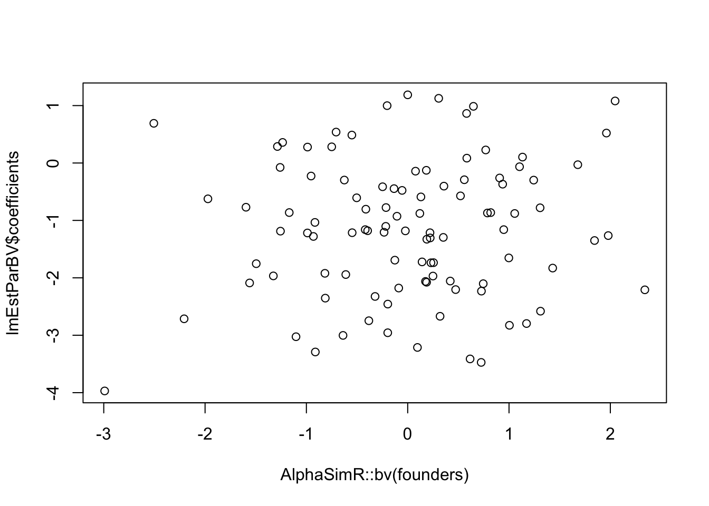
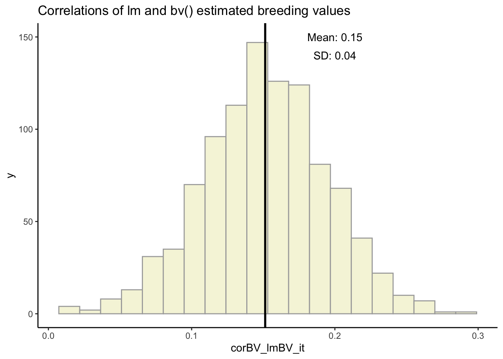
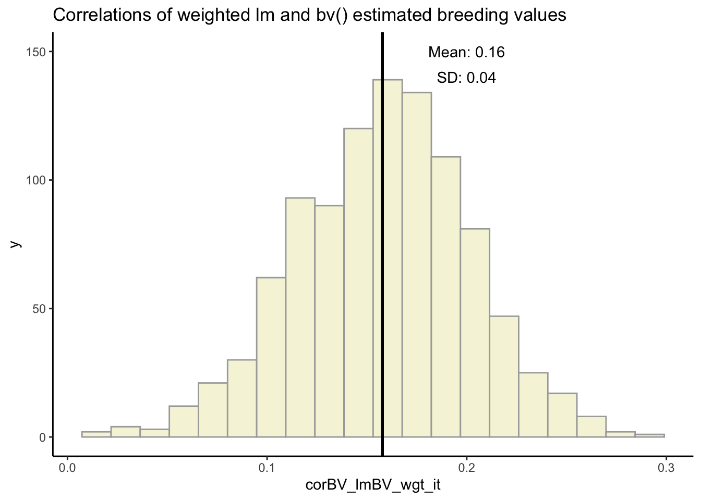

Data for Breeding Value
Tim Mulderrig
February 11, 2025
Last updated: 2025-02-25
Checks: 6 1
Knit directory: PLBRG_7170/
This reproducible R Markdown analysis was created with workflowr (version 1.7.1). The Checks tab describes the reproducibility checks that were applied when the results were created. The Past versions tab lists the development history.
The R Markdown is untracked by Git. To know which version of the R
Markdown file created these results, you’ll want to first commit it to
the Git repo. If you’re still working on the analysis, you can ignore
this warning. When you’re finished, you can run
wflow_publish to commit the R Markdown file and build the
HTML.
Great job! The global environment was empty. Objects defined in the global environment can affect the analysis in your R Markdown file in unknown ways. For reproduciblity it’s best to always run the code in an empty environment.
The command set.seed(20250128) was run prior to running
the code in the R Markdown file. Setting a seed ensures that any results
that rely on randomness, e.g. subsampling or permutations, are
reproducible.
Great job! Recording the operating system, R version, and package versions is critical for reproducibility.
Nice! There were no cached chunks for this analysis, so you can be confident that you successfully produced the results during this run.
Great job! Using relative paths to the files within your workflowr project makes it easier to run your code on other machines.
Great! You are using Git for version control. Tracking code development and connecting the code version to the results is critical for reproducibility.
The results in this page were generated with repository version ba34ff6. See the Past versions tab to see a history of the changes made to the R Markdown and HTML files.
Note that you need to be careful to ensure that all relevant files for
the analysis have been committed to Git prior to generating the results
(you can use wflow_publish or
wflow_git_commit). workflowr only checks the R Markdown
file, but you know if there are other scripts or data files that it
depends on. Below is the status of the Git repository when the results
were generated:
Ignored files:
Ignored: .DS_Store
Ignored: .Rhistory
Ignored: .Rproj.user/
Ignored: analysis/.DS_Store
Untracked files:
Untracked: analysis/Lab4_DataForBreedingValue.Rmd
Untracked: analysis/pset1_tpm.pdf
Unstaged changes:
Modified: analysis/Lab3_ProgrammingAlphaSimR.Rmd
Modified: analysis/index.Rmd
Modified: analysis/lab2_MatrixAlgebra.Rmd
Modified: analysis/pset1_tpm.Rmd
Modified: output/QTLgenotypes.csv
Note that any generated files, e.g. HTML, png, CSS, etc., are not included in this status report because it is ok for generated content to have uncommitted changes.
There are no past versions. Publish this analysis with
wflow_publish() to start tracking its development.
Objectives
We will be using AlphaSimR to
* Simulate datasets to test statistical genetic analysis methods
* Simulate whole breeding programs in view of optimizing them
Example code to work with AlphaSimR to
1. Create a population and get breeding values from
AlphaSimR and from an “experiment”
2. Prepare a data structure for breeding records that will be useful for
simulation.
3. Use this data structure in simple linear model analyses.
Reproducibility
Here is the README file for this report
Script setup
Install packages, start the README.md, set the random seed.
Hiding all this because you have seen it before.
Script parameters
nFounders <- 100
nChr <- 7
segSites <- 140
nQTL <- 100Genotypic value versus breeding value
By default, the additive genetic variance among founders will be 1.
Here are a couple of AlphaSimR genetic models with
non-additive gene action. addTraitAD gives an additive +
dominance gene action. Each locus has its own dominance deviation and
there is a variance of it among loci:
\(dd \sim N(meanDD, varDD)\)
addTraitADE adds pairwise additive by additive
epistasis.
# Create haplotypes for founder population of outbred individuals
founderHaps <- AlphaSimR::runMacs(nInd = nFounders, nChr = nChr, segSites = segSites)
# Setup the genotype to phenotype mapping
SP <- AlphaSimR::SimParam$new(founderHaps)
meanDD <- 0.4
varDD <- 0.04
# Additive and dominance model
SP$addTraitAD(nQtlPerChr = nQTL, meanDD = meanDD, varDD = varDD)
# Create a new population of founders
founders <- AlphaSimR::newPop(founderHaps, simParam = SP)
# Compare genotypic and breeding values
corBVGV <- cor(AlphaSimR::gv(founders), AlphaSimR::bv(founders)) %>%
round(3)
plot(AlphaSimR::gv(founders), AlphaSimR::bv(founders), pch = 16, xlab = "Genotypic value",
ylab = "Breeding value", main = paste0("BV vs GV: AD model, cor=", corBVGV),
cex.axis = 1.3, cex.lab = 1.3)
# Additive dominance and epistasis model
# 'the relative value of additive-by-additive variance
# compared to additive variance'
SP <- AlphaSimR::SimParam$new(founderHaps)
relAA <- 0.5
SP$addTraitADE(nQtlPerChr = nQTL, meanDD = meanDD, varDD = varDD, relAA = relAA)
# Create a new population of founders
founders <- AlphaSimR::newPop(founderHaps, simParam = SP)
# Compare genotypic and breeding values
corBVGV <- cor(AlphaSimR::gv(founders), AlphaSimR::bv(founders)) %>%
round(3)
plot(AlphaSimR::gv(founders), AlphaSimR::bv(founders), pch = 16, xlab = "Genotypic value",
ylab = "Breeding value", main = paste0("BV vs GV: ADE model, cor=", corBVGV),
cex.axis = 1.3, cex.lab = 1.3)

Estimated versus analytical breeding value
Estimating the breeding value by a progeny test.
In practice, the BV can’t be observed. A progeny test calculates the
average deviation from the population mean of progeny from randomly
mating an individual to the population: 2 * mean(progeny pheno - pop
mean)
# Error variance for phenotypic evaluations
varE <- 1
# Number of progeny for breeding value estimation
nProgeny1 <- 5
nProgeny2 <- 50
# Estimate breeding values
# ind is the individual whose breeding value you want to estimate
# pop is the population that individual is in
# nProgeny is the number of progeny for the test
# varE is the error variance with which phenotypes are evaluated
# if the genotypic variance is 1 then varE=1 will give h2 = 0.5
estimateBV <- function(ind, pop, nProgeny, varE = 1) {
# I'm going to cheat a little and assume we know the population mean exactly
popMean <- AlphaSimR::gv(pop) %>%
mean
# Set up crossPlan to cross ind to random others nProgeny times
crossPlan <- cbind(ind, sample(AlphaSimR::nInd(pop), nProgeny, replace = T))
progeny <- AlphaSimR::makeCross(pop, crossPlan)
progPheno <- AlphaSimR::setPheno(progeny, varE = varE, onlyPheno = T)
return(2 * (mean(progPheno) - popMean))
}
# estimate BV with a progeny test of nProgeny1
estimatedBV <- sapply(1:AlphaSimR::nInd(founders), estimateBV, pop = founders, nProgeny = nProgeny1,
varE = varE)
# Compare estimated and analytical breeding values
plot(estimatedBV, AlphaSimR::bv(founders), pch = 16, xlab = "Estimated value", ylab = "Analytical value",
main = paste("Breeding value estimated from", nProgeny1, "Progeny"))
# estimate BV with a progeny test of nProgeny2
estimatedBV <- sapply(1:AlphaSimR::nInd(founders), estimateBV, pop = founders, nProgeny = nProgeny2,
varE = varE)
# Compare estimated and analytical breeding values
plot(estimatedBV, AlphaSimR::bv(founders), pch = 16, xlab = "Estimated value", ylab = "Analytical value",
main = paste("Breeding value estimated from", nProgeny2, "Progeny"))

Round robin crossing design
This is a simple design that ensures that all parents get used equally
makeRoundRobin <- function(pop, makeRandom = F) {
nInd <- AlphaSimR::nInd(pop)
parOrder <- 1:nInd
if (makeRandom)
parOrder <- sample(parOrder)
return(cbind(parOrder, parOrder[c(2:nInd, 1)]))
}
# Make a bunch of new lines
crossPlan <- makeRoundRobin(founders)
exptLines <- AlphaSimR::makeCross(founders, crossPlan)
cbind(exptLines@id, exptLines@mother, exptLines@father) %>%
head
[,1] [,2] [,3]
[1,] "5601" "1" "2"
[2,] "5602" "2" "3"
[3,] "5603" "3" "4"
[4,] "5604" "4" "5"
[5,] "5605" "5" "6"
[6,] "5606" "6" "7" records data structure
AlphaSimR populations only retain phenotypes of the most
recent evaluation. In plant breeding, it is common to evaluate the same
line more than once, and it makes sense to include all of those
phenotypes in downstream analyses. Here, I propose a simple tibble to
retain phenotypic records.
Set up records
The columns are the individual id, its seed parent id
seedPar, its pollen parent id pollenPar, its
observed phenotype pheno, and the error variance of that
observed phenotype varE
nInd <- 100
varE <- 1
# Function to make a simple data structure out of a population
# AlphaSimR doesn't retain varE once you have setPheno, so supply it
makeRecFromPop <- function(pop, varE = 1) {
dplyr::tibble(id = pop@id, seedPar = pop@mother, pollenPar = pop@father, pheno = AlphaSimR::pheno(pop),
varE = varE)
}
# Run a phenotyping experiment and populate the `records` data structure
exptLines <- AlphaSimR::setPheno(exptLines, varE = varE, simParam = SP)
records <- makeRecFromPop(exptLines, varE = varE)
head(records)
# Compare genotypic and phenotypic values
corPhGV <- cor(AlphaSimR::gv(exptLines), AlphaSimR::pheno(exptLines)) %>%
round(3)
plot(AlphaSimR::gv(exptLines), AlphaSimR::pheno(exptLines), pch = 16, xlab = "Genetic value",
ylab = "Phenotype", main = paste0("First Evaluation, cor=", corPhGV))
# Second evaluation
exptLines <- AlphaSimR::setPheno(exptLines, varE = varE, simParam = SP)
# Add the new records to the old ones
records <- dplyr::bind_rows(records, makeRecFromPop(exptLines, varE = varE))
# Compare genotypic and phenotypic values
corPhGV <- cor(AlphaSimR::gv(exptLines), AlphaSimR::pheno(exptLines)) %>%
round(3)
plot(AlphaSimR::gv(exptLines), AlphaSimR::pheno(exptLines), pch = 16, xlab = "Genetic value",
ylab = "Phenotype", main = paste0("Second Evaluation, cor=", corPhGV))
# A tibble: 6 × 5
id seedPar pollenPar pheno[,"Trait1"] varE
<chr> <chr> <chr> <dbl> <dbl>
1 5601 1 2 0.290 1
2 5602 2 3 1.60 1
3 5603 3 4 0.0527 1
4 5604 4 5 -1.32 1
5 5605 5 6 1.30 1
6 5606 6 7 -0.802 1

Use records to estimate genotypic value from >1 observation
# BASIC LINEAR MODEL
lmEstGV <- lm(pheno ~ -1 + id, data = records)
gvEstimates <- coefficients(lmEstGV)
# Compare genotypic and **Combined** phenotypic values
corEstGV <- cor(AlphaSimR::gv(exptLines), gvEstimates) %>%
round(3)
plot(AlphaSimR::gv(exptLines), gvEstimates, pch = 16, xlab = "Genetic value", ylab = "Phenotype",
main = paste0("Both Evaluations, cor=", corEstGV))
Use records in two-stage selection
In plant breeding there is often a preliminary evaluation stage, then a more advanced stage. We can use the records to keep track of these stages.
nIndStage1 <- 400
nIndStage2 <- 100
varEstage1 <- 4
varEstage2 <- 1
progenyPerCross <- nIndStage1/nrow(crossPlan)
# The production pipeline starts with a bunch of new lines
exptLines <- AlphaSimR::makeCross(founders, crossPlan, nProgeny = progenyPerCross)
# Phenotypic evaluation of experimental lines
exptLines <- AlphaSimR::setPheno(exptLines, varE = varEstage1, simParam = SP)
records <- makeRecFromPop(exptLines, varE = varEstage1)
# Select among lines to advance to Stage 2
keep <- AlphaSimR::pheno(exptLines) %>%
order(decreasing = T) %>%
.[1:nIndStage2]
# Phenotypic evaluation of Stage 2 lines
stage2Lines <- exptLines[keep]
stage2Lines <- AlphaSimR::setPheno(stage2Lines, varE = varEstage2, simParam = SP)
records <- dplyr::bind_rows(records, makeRecFromPop(stage2Lines, varE = varEstage2))
str(records)
tibble [500 × 5] (S3: tbl_df/tbl/data.frame)
$ id : chr [1:500] "5701" "5702" "5703" "5704" ...
$ seedPar : chr [1:500] "1" "1" "1" "1" ...
$ pollenPar: chr [1:500] "2" "2" "2" "2" ...
$ pheno : num [1:500, 1] -2.65 2.056 4.305 3.411 -0.319 ...
$ varE : num [1:500] 4 4 4 4 4 4 4 4 4 4 ...Estimate gain from selection four ways
This little section is mostly to illustrate that
AlphaSimR thinks of breeding values relative to the
population mean, but of genotypic values in absolute
terms.
print("Gain from selection on BV where the reference pop is stage2Lines")
print(paste("Gain from selection", round(mean(AlphaSimR::bv(stage2Lines)) - mean(AlphaSimR::bv(exptLines)),
2)))
print("Gain from selection on BV where the reference pop is all exptLines")
print(paste("Gain from selection", round(mean(AlphaSimR::bv(exptLines)[keep]) - mean(AlphaSimR::bv(exptLines)),
2)))
print("Gain from selection on **GV** where the reference pop is stage2Lines")
print(paste("Gain from selection", round(mean(AlphaSimR::gv(stage2Lines)) - mean(AlphaSimR::gv(exptLines)),
2)))
print("Gain from selection on **GV** where the reference pop is all exptLines")
print(paste("Gain from selection", round(mean(AlphaSimR::gv(exptLines)[keep]) - mean(AlphaSimR::gv(exptLines)),
2)))
[1] "Gain from selection on BV where the reference pop is stage2Lines"
[1] "Gain from selection 0"
[1] "Gain from selection on BV where the reference pop is all exptLines"
[1] "Gain from selection 0.53"
[1] "Gain from selection on **GV** where the reference pop is stage2Lines"
[1] "Gain from selection 0.64"
[1] "Gain from selection on **GV** where the reference pop is all exptLines"
[1] "Gain from selection 0.64"Homework
- We saw how to write a function to estimate breeding values by doing
a progeny test (chunk
Estimate breeding value). Then, in the chunkLinear model estimation, we used a simple linear model to combine records to estimate the genotypic values of individuals (chunkLinear model estimation).
Tweak the linear model so that it estimates, for example, the breeding values of the seed parent. HINT: this will entail introducingseedParinto the model. Use theexptLinesand their associatedrecordsfrom theTwo stage selectionchunk.
lmEstParBV <- lm(pheno ~ 1 + seedPar, data = records)- Make plots comparing the breeding values thus obtained to those
obtained by the
bvfunction or by our ownestimateBVfunction.
corBV_lmBV <- cor(AlphaSimR::bv(founders), lmEstParBV$coefficients)
plot(AlphaSimR::bv(founders), lmEstParBV$coefficients)
- The
lmfunction from thestatspackage can account for observations with different weights. Weights should be the inverse of the error variance for the observation. Handily, we keep that error variance in therecordstibble. Again, tweak the linear model and use the records from theTwo stage selectionchunk to account for the different error variances from Stage 1 versus Stage 2 when you estimate the genotypic values for individuals.
lmEstParBV_wgtd <- lm(pheno ~ 1 + seedPar, weights = 1/varE, data = records)- Correlate the genotypic values obtained with or without weighting to
the simulated values obtained by the
AlphaSimR::gvfunction.
cor(AlphaSimR::gv(founders), lmEstParBV$coefficients)
cor(AlphaSimR::gv(founders), lmEstParBV_wgtd$coefficients)
[,1]
Trait1 -0.0009093427
[,1]
Trait1 -0.0002745567- BONUS for everyone: There is random error associated with
all of these simulations. If you want to see how the breeding value from
the linear model compares with the
estimateBVfunction, or how weighted versus unweighted estimates of genotypic value correlate to the truth, you will have to do each analysis multiple times and get means and standard deviations.
iterations <- 1000
nIndStage1 <- 400
nIndStage2 <- 100
varEstage1 <- 0.4
varEstage2 <- 0.1
progenyPerCross <- nIndStage1/nrow(crossPlan)
corBV_lmBV_it <- c()
corBV_lmBV_wgt_it <- c()
for (i in 1:iterations) {
sim_expt <- AlphaSimR::setPheno(exptLines, varE = varE, simParam = SP)
sim_records <- makeRecFromPop(sim_expt, varE = varEstage1)
sim_keep <- AlphaSimR::pheno(sim_expt) %>%
order(decreasing = T) %>%
.[1:nIndStage2]
sim_stage2 <- sim_expt[sim_keep]
sim_stage2 <- AlphaSimR::setPheno(sim_stage2, varE = varEstage2, simParam = SP)
sim_records <- dplyr::bind_rows(sim_records, makeRecFromPop(sim_stage2, varE = varEstage2))
sim_lm <- lm(pheno ~ 1 + seedPar, data = sim_records)
corBV_lmBV_it[i] <- cor(AlphaSimR::bv(founders), sim_lm$coefficients)
sim_lm_wtg <- lm(pheno ~ 1 + seedPar, weights = 1/varE, data = sim_records)
corBV_lmBV_wgt_it[i] <- cor(AlphaSimR::bv(founders), sim_lm_wtg$coefficients)
}ggplot(data = as.data.frame(corBV_lmBV_it), aes(x = corBV_lmBV_it)) + geom_histogram(bins = 20,
color = "darkgray", fill = "beige") + ggtitle("Correlations of lm and bv() estimated breeding values") +
geom_vline(xintercept = mean(corBV_lmBV_it), linewidth = 1, color = "black") +
annotate("text", x = 0.2, y = 150, label = (paste0("Mean: ", round(mean(corBV_lmBV_it),
2)))) + annotate("text", x = 0.2, y = 140, label = (paste0("SD: ", round(sd(corBV_lmBV_it),
2)))) + theme_classic()
ggplot(data = as.data.frame(corBV_lmBV_wgt_it), aes(x = corBV_lmBV_wgt_it)) + geom_histogram(bins = 20,
color = "darkgray", fill = "beige") + ggtitle("Correlations of weighted lm and bv() estimated breeding values") +
geom_vline(xintercept = mean(corBV_lmBV_wgt_it), linewidth = 1, color = "black") +
annotate("text", x = 0.2, y = 150, label = (paste0("Mean: ", round(mean(corBV_lmBV_wgt_it),
2)))) + annotate("text", x = 0.2, y = 140, label = (paste0("SD: ", round(sd(corBV_lmBV_wgt_it),
2)))) + theme_classic()

- BONUS for stat heads. You could run a linear model with
both
seedParandpollenParas factors. But that would lead to separate estimates of these effects when in fact the same individuals are both seed and pollen parents. How could you implement a linear model that would estimate one effect per parent regardless of whether it was a seed or pollen parent?
pivot_records <- pivot_longer(data = records, cols = c("seedPar", "pollenPar"), values_to = "parents")
pivot_lm <- lm(pheno ~ 1 + parents, data = pivot_records)
cor(AlphaSimR::bv(founders), coefficients(pivot_lm))
[,1]
Trait1 0.08074739Homework grading
I want to receive a zipped folder with your homework in it one week
from today, before lab. Please use the workflowr package to
create the folder structure. You should have created an Rmarkdown script
that will create an html file that I can look through. So:
1. 2 points for sending in a zipped folder on time.
2. 2 points for each successful step (1 through 4) from above, with
partial credit.
3. Each BONUS is worth two points. So you can get >10 points if you
want to slack off on some other lab.
4. I will subtract 0.5 points for every day the homework is late.
sessionInfo()
R version 4.4.1 (2024-06-14)
Platform: aarch64-apple-darwin20
Running under: macOS 15.3.1
Matrix products: default
BLAS: /Library/Frameworks/R.framework/Versions/4.4-arm64/Resources/lib/libRblas.0.dylib
LAPACK: /Library/Frameworks/R.framework/Versions/4.4-arm64/Resources/lib/libRlapack.dylib; LAPACK version 3.12.0
locale:
[1] en_US.UTF-8/en_US.UTF-8/en_US.UTF-8/C/en_US.UTF-8/en_US.UTF-8
time zone: America/New_York
tzcode source: internal
attached base packages:
[1] stats graphics grDevices utils datasets methods base
other attached packages:
[1] lubridate_1.9.4 forcats_1.0.0 stringr_1.5.1 dplyr_1.1.4
[5] purrr_1.0.2 readr_2.1.5 tidyr_1.3.1 tibble_3.2.1
[9] ggplot2_3.5.1 tidyverse_2.0.0
loaded via a namespace (and not attached):
[1] utf8_1.2.4 sass_0.4.9 generics_0.1.3 stringi_1.8.4
[5] hms_1.1.3 digest_0.6.37 magrittr_2.0.3 evaluate_1.0.1
[9] grid_4.4.1 timechange_0.3.0 fastmap_1.2.0 rprojroot_2.0.4
[13] workflowr_1.7.1 jsonlite_1.8.9 formatR_1.14 promises_1.3.2
[17] scales_1.3.0 jquerylib_0.1.4 Rdpack_2.6.2 cli_3.6.3
[21] crayon_1.5.3 rlang_1.1.4 rbibutils_2.3 bit64_4.5.2
[25] munsell_0.5.1 withr_3.0.2 cachem_1.1.0 yaml_2.3.10
[29] AlphaSimR_1.6.1 parallel_4.4.1 tools_4.4.1 tzdb_0.4.0
[33] colorspace_2.1-1 httpuv_1.6.15 here_1.0.1 vctrs_0.6.5
[37] R6_2.5.1 lifecycle_1.0.4 git2r_0.35.0 bit_4.5.0.1
[41] fs_1.6.5 vroom_1.6.5 pkgconfig_2.0.3 pillar_1.10.0
[45] bslib_0.8.0 later_1.4.1 gtable_0.3.6 glue_1.8.0
[49] Rcpp_1.0.13-1 xfun_0.49 tidyselect_1.2.1 rstudioapi_0.17.1
[53] knitr_1.49 farver_2.1.2 htmltools_0.5.8.1 labeling_0.4.3
[57] rmarkdown_2.29 compiler_4.4.1